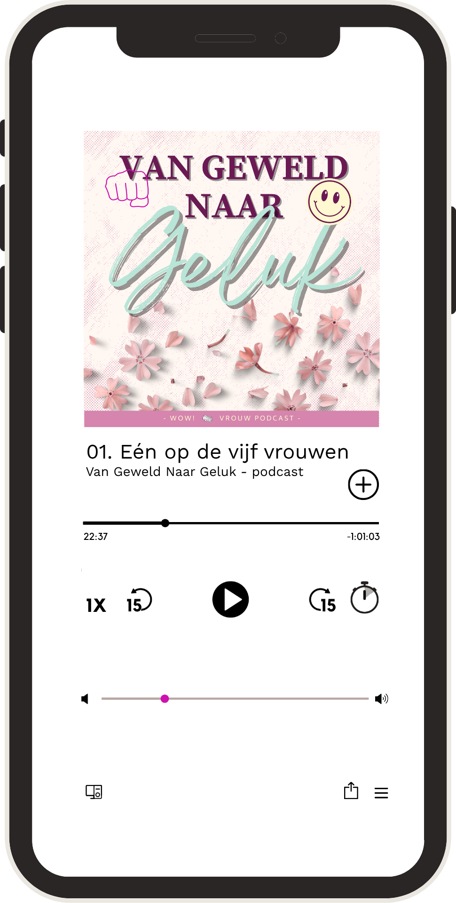

Ik twijfel over geweld in mijn relatie.
Bekijk video →Het begon met liefde
Je voelt dat er iets niet klopt. Je loopt op eieren. Steeds pas je jezelf weer aan om het goed te doen voor hem. Maar het lijkt nooit goed genoeg. Je twijfelt aan jezelf. Je vriendin zegt dat ze je niet meer terugkent. Je voelt je steeds angstiger en slaapt slecht. Je vraagt jezelf soms af waarom je in deze relatie blijft.
Meer informatie over IK GA LEVEN →
Het allerbelangrijkste is dat je een plan maakt om veilig te vertrekken. Het liefst bereid je je vertrek voor en maak je een noodplan voor als de situatie uit de hand loopt. Als het veilig kan, laat dan je e-mailadres achter voor een invulversie.
Wil je wel het veiligheidsplan maken, maar kun je je e-mailadres niet veilig achterlaten? Klik dan hier voor de webversie.
Iedere situatie is anders. Maar de vragen die vrouwen zichzelf stellen, lijken vaak op elkaar. Als je jezelf herkent in het verhaal van Marijke, Joyce of Ava, dan is IK GA LEVEN er voor jou. Klik op de knop onder de situatie die voor jou het meest passend is.
Ik twijfel over geweld in mijn relatie.
Bekijk video →Ik zit in een relatie met geweld.
Lees verder →Ik heb geweld in mijn relatie meegemaakt.
Lees meer →Zit ik in een relatie met geweld?
Jij denkt bij een vrouw die wordt mishandeld vast aan blauwe ogen en een gebroken arm. Geweld in een relatie kan er heel anders uitzien. Twijfel je over wat er in je relatie aan de hand is? We namen een video voor je op: "Het begon met liefde. Waarom voelt het nu alsof het niet klopt?" (12 minuten)
Over de Ik ga leven cursus
Ik ben Hiltje. Als huisarts en als arts bij Veilig Thuis heb ik veel ervaring met geweld in afhankelijkheidsrelaties, zoals partnergeweld en kindermishandeling. Als coach begeleid ik vrouwen die ingrijpende dingen hebben meegemaakt. En ik ben de initiatiefnemer van de IK GA LEVEN-cursus: een cursus die vrouwen na geweld of misbruik helpt het te begrijpen, de regie terug te nemen en weer geluk en plezier in hun leven te vinden.
Wil je weten wat de cursus inhoudt en of die bij jou past?
Meer informatie →


Van Geweld naar Geluk
Aflevering 1Titel volgt
Aflevering 2Titel volgt
Aflevering 3Titel volgt
Hoor als eerste als we live gaan:
Zet een eerste stap

Deel wat er speelt en spreek je vraag in. Je vraag wordt in de podcast beantwoord.
Spreek een bericht in →
Een online bijeenkomst waarin we samen kijken naar wat psychisch geweld en dwingende controle werkelijk zijn.
Meld je aan →
Een kort, gratis gesprek. Geen verplichtingen; samen kijken of dit bij je past.
Plan een gesprek →IK GA LEVEN CURSUS
Ben je uit een relatie met geweld, of weet je dat je weg wilt maar weet je niet hoe? IK GA LEVEN geeft je in 10 weken inzichten over dwingende controle, traumabinding en isolatie als tactiek. Zodat je begrijpt wat er werkelijk aan de hand is en zelf kunt bepalen wat de volgende stap is.
Vrouwen in jouw situatie herkennen zichzelf vaak niet meer. Tijd om jezelf terug te vinden.
Meer informatie →Als het veilig is